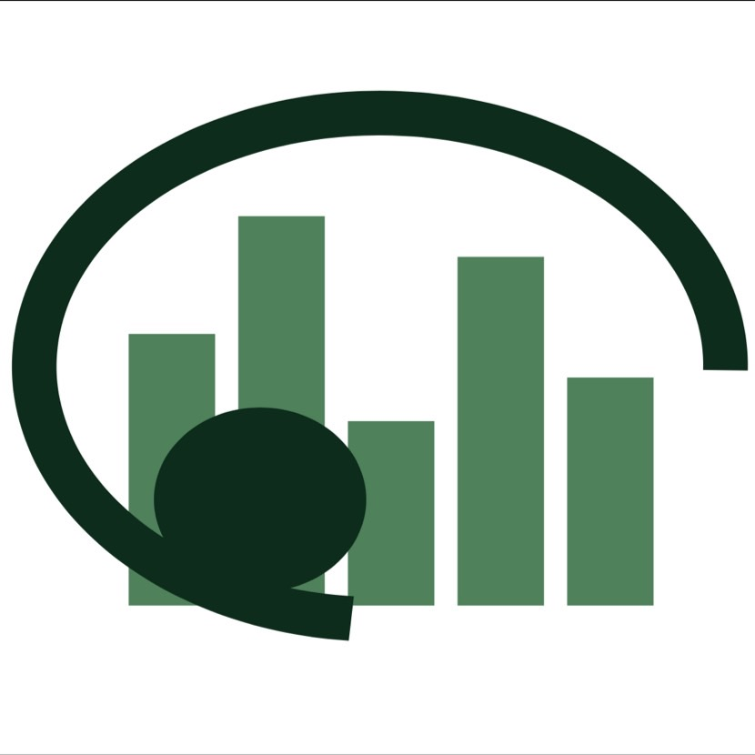

世界中の教育を知って、自分の受けている教育について知ろう
今日議論されている社会問題のほとんどにおいては、教育背景の違いが根底にある。例えば、アメリカなどと比べるとアフリカではジェンダー教育が遅れていて、その結果18歳未満で結婚を強いられる女性が多い。 根底の背景部分を理解せずに、一時的な解決を図ることは未来世代へ責任を放棄するのと同じである。未来を担う学生への教育に革新をもたらすことで本質的に物事を捉えられる人材が生まれ、持続的な解決が図れる。 日本の社会問題を解決する上で各国の教育背景を知ること、そして教育をより良いものにしていくことを重視するべきである。 日本の学校教育には教師からの一方的な享受という側面がある。教育を施す側だけでなく、受ける側の私達も自ら考える能動的な理解が必要となる。 つまり、私達学生が同年代の学生に向けてその重要性と現状をわかりやすく伝えるという「被教育者同士での情報共有」に価値がある。私達はこの情報共有の上で便利なツールとしてWebサイトが活用できるのではないかと考え、今回の企画への応募を決めた。


私たちは持続可能な開発目標（SDGs）を支援しています。